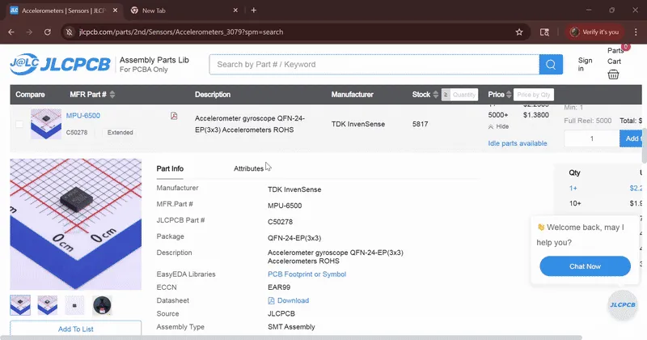
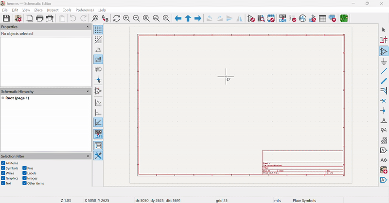
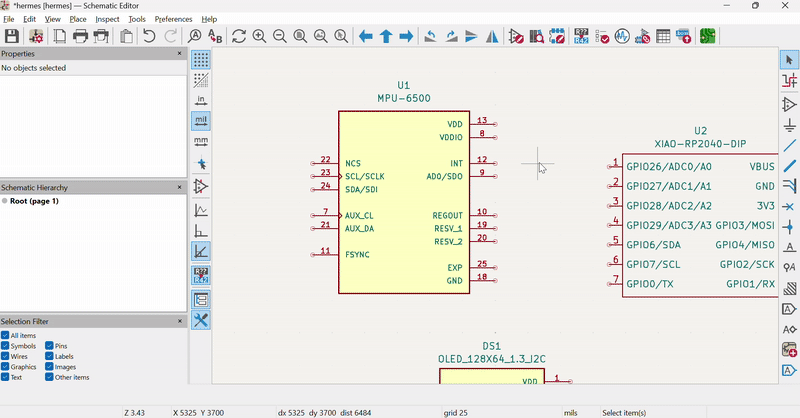
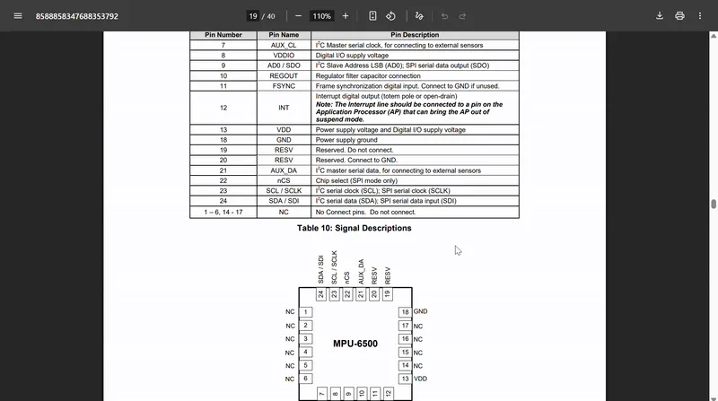

Step 3: Make Your Schematic
Most parts on JLCPCB have symbols and footprints linked on their info page, but they're made by EasyEDA and you need to pay for an account (boo). If you google your part name + kicad symbol you'll probably see a SnapMagic link (you'll have to make a SnapMagic account).
It doesn't matter where you get your symbol and footprint from, or even if you get them from 2 separate places, they'll be pretty accurate. If you're having trouble finding them, shoot a message in the #electronics and #hermes channels.
Import the footprint and symbol into KiCAD. (if you don't know how, you should do Pathfinder!)


Open up KiCAD's schematic editor and place your sensor's symbol. Most likely, your sensor is a square with a bunch of pins sticking out each side. Your symbol won't look like this, but make sure the pins on the symbol match the ones on the pinout table.
We're going to be using the XIAO RP2040 microcontroller, just like Pathfinder (so you should already have that downloaded and imported). Place that into your schematic as well. Later, you'll have to copy over the XIAO's footprint into your Hermes footprint folder, but after that you're golden.
In my Hermes, I used a 0.96" OLED screen so I could display my sensor's information (they're also communicating using I2C), so if you wanted to use a screen, 7 segment display, or something else (post what part you're using in #hermes!!), you totally can. Just make sure it's I2C enabled, read the datasheet for that part, and follow its pinout table.

I2C is great because there's only 2 pins, AND because the wiring is insanely simple. All SDA pins connect and all SCL pins connect. No matter how many components you have, all SDA pins connect and all SCL pins connect.
Make a Global Label for SDA and one for SCL (doesn't have to be those specific names, you could use bleep and blork), and connect it to each of your components' SCL and SDA pins.
You HAVE to connect a 4.7k resistor to the SDA and SCL pins on your XIAO. These are pull-up resistors. I2C is open drain, which means it can only pull voltage low. To make sure data isn't "floating" (neither high nor low, 1 or 0), you have to connect pull-UP resistors that will bring the voltage high. It takes a bit to understand, so I'd recommend googling it for a bit.
For the rest of your schematic, your sensor's datasheet will be your best friend. It'll tell you what each pin does, where you have to connect it, and if you need capacitors, resistors, or any other add-ons that you may not have known otherwise.

For example, I had no idea the MPU-6500 needed 3 capacitors. After reading through the pinout table and seeing a bunch of weird pins (FSYNC and VDDIO), I scrolled down and it showed me a sample circuit for the sensor, where I saw what each pin should be connected to and where I had to use capacitors. While your datasheet may not have a sample circuit, it's common to catch little details like that while you're wiring your schematic.
All the pins that the datasheet isn't specific enough for you can google for, like interrupt pins. Interrupt pins are a common feature on sensors; they send a signal to the MCU when the sensor detects a change. This stops the microcontroller from having to check the data input pins of the sensor every like 2 milliseconds.
This is what my finished schematic looks like! I copied the datasheet's sample circuit for the capacitor placement, attached the interrupt pin to a GPIO pin on the XIAO (like you should too), followed the reserved pins' instructions, and googled whatever else I needed (like what to connect VDDIO to).
At first glance, this looks complicated as heck. But once you look at each individual pin, it'll start to make sense. (and if it doesn't, drop a message in the #pathfinder channel on slack!)

After you spend 5 hours on your Hermes board and submit, you'll get $20 to buy your PCB and all your parts. Each additional hour you spend on your PCB and firmware you'll get $5 more to spend on any parts you might want.
I bought a sensor and an OLED display, maybe you get a sensor and a knob (to control sensivity?), or a sensor and switch to control settings. Maybe you get an OLED screen and 2 switches, the sky's the limit. You'll buy the XIAO and any other non-SMD parts you use on Digikey, Aliexpress, or a local parts supplier.